19 Jul 2022 starting note (note date indicates latest update)
A few years in the making, my current keyboard shortcuts are as follows.
Note: use of the Kinesis Advantage 2 keyboard, ie its unorthodox layout, has influenced some.
Global
Standard: https://support.apple.com/en-us/HT201236
Custom shortcuts using macOS' Preferences > Keyboard > Shortcuts
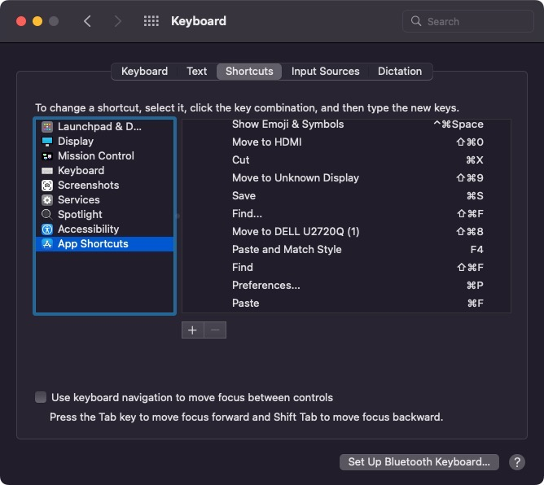
| shortcut |
action |
setup |
Cmd Space |
Alfred |
Alfred Preferences |
Cmd Shift Space |
Show Spotlight search (changed from default Cmd Space) |
Shortcuts > Spotlight |
Alt Space |
Espanso snippet search (default) |
Espanso config file [Nic Note: Espanso] |
Shift Cmd P |
Alfred Clipboard History |
Alfred Preferences |
Shift Alt P |
Pixelsnap |
Pixelsnap Preferences (from macOS menu) |
Cmd Option Space |
|
|
Cmd D |
Copy (replacing the standard Cmd C, avoids moving finger from home row) |
Shortcuts > App Shortcuts |
Cmd F |
Paste (replacing the standard Cmd V, avoids moving finger from home row) |
Shortcuts > App Shortcuts |
F4 |
Edit > Paste and Match Style |
Shortcuts > App Shortcuts |
Window Management
Required: Moom (see Nic Note: Moom)
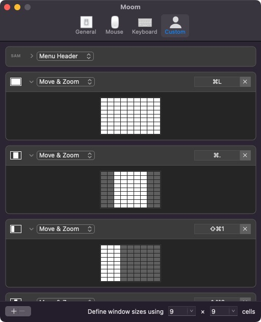
Current setup with 4 screens (see Nic Note: My Home Office Setup):
| shortcut |
action |
setup |
Cmd Shift 1 |
move & resize window to 1st third of the screen |
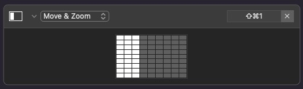 |
Cmd Shift 2 |
move & resize window to 2nd third of the screen |
 |
Cmd Shift 3 |
move & resize window to 3rd third of the screen |
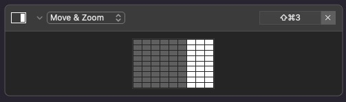 |
Cmd Shift 4 |
move & resize window to top third of the screen |
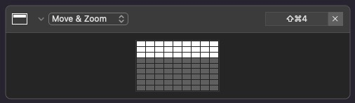 |
Cmd Shift 5 |
(used for screenshots - see below) |
|
Cmd Shift 6 |
move & resize window to middle third of the screen |
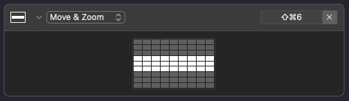 |
Cmd Shift 7 |
move window to left screen |
Preferences > Keyboard > Shortcuts > App Shortcuts: create with exact name from macOS "Window" menu |
Cmd Shift 8 |
move window to right screen |
Preferences > Keyboard > Shortcuts > App Shortcuts: create with exact name from macOS "Window" menu |
Cmd Shift 9 |
move window to bottom screen (demo) |
Preferences > Keyboard > Shortcuts > App Shortcuts: create with exact name from macOS "Window" menu |
Cmd Shift 0 |
move window to top screen (teleprompter) |
Preferences > Keyboard > Shortcuts > App Shortcuts: create with exact name from macOS "Window" menu |
Cmd L |
resize: full screen |
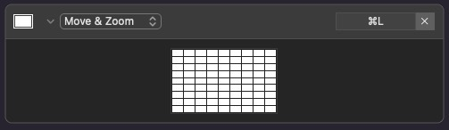 |
Cmd Shift L |
resize: 1680x1050 |
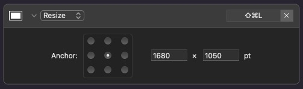 |
Cmd Shift K |
resize: 3/4 of screen |
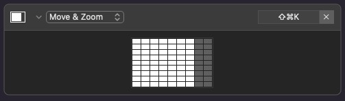 |
Cmd . |
resize: center of screen |
with Moom: 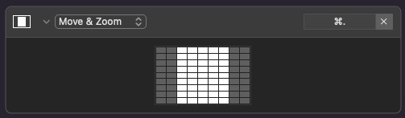 |
Cmd ← |
move & resize: left half of screen |
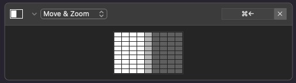 |
Cmd → |
move & resize: right half of screen |
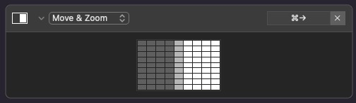 |
Screenshots and screen recording
Required: ScreenShotX (see Nic Note: ScreenShotX)
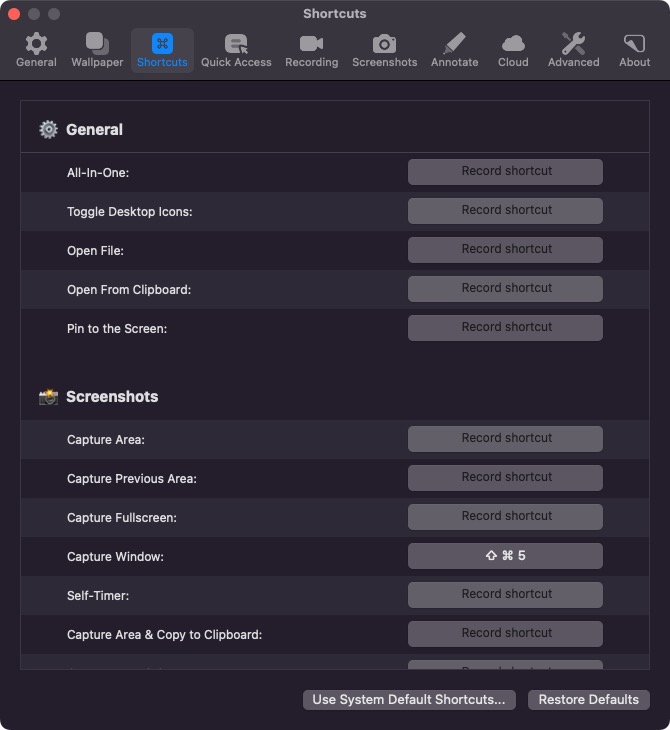
| shortcut |
action |
setup |
Cmd Shift 5 |
capture window |
with ScreenShotX |
VS Code
Snippets in Visual Studio Code: https://code.visualstudio.com/docs/editor/userdefinedsnippets#_creating-your-own-snippets
Manage from Preferences > Keyboard Shortcuts
| shortcut |
action |
Cmd Shift A |
Select All Occurences |
Cmd Shift W |
Close Window (=tab) |
Cmd / |
comment / uncomment |
Cmd Alt P |
Command Palette |
Terminal
Standard shorcuts - for reference.
| shortcut |
action |
setup |
Ctrl C |
clear line |
default |
Powerpoint
Cannot be changed/customised :(
Keyboard shortcuts in Powerpoint:
https://support.microsoft.com/en-us/office/use-keyboard-shortcuts-to-create-powerpoint-presentations-ebb3d20e-dcd4-444f-a38e-bb5c5ed180f4#PickTab=macOS
Most used:
| shortcut |
action |
setup |
⌘ 1 |
Normal view |
default |
⌘ 2 |
Slide sorter view |
default |
⌘ Shift Enter |
Start Slideshow |
default |
Word
Cannot be changed/customised :(
Keyboard shortcuts in Word:
https://support.microsoft.com/en-us/office/keyboard-shortcuts-in-word-95ef89dd-7142-4b50-afb2-f762f663ceb2
Pixelsnap
See Nic Note: Pixelsnap
| shortcut |
action |
setup |
Shift Alt P |
Pixelsnap |
Pixelsnap Preferences (from macOS menu) |
H |
add horizontal guide |
custom shortcut |
V |
add vertical guide |
custom shortcut |
Shift H |
hold horizontal distance |
custom shortcut |
Shift V |
hold vertical distance |
custom shortcut |